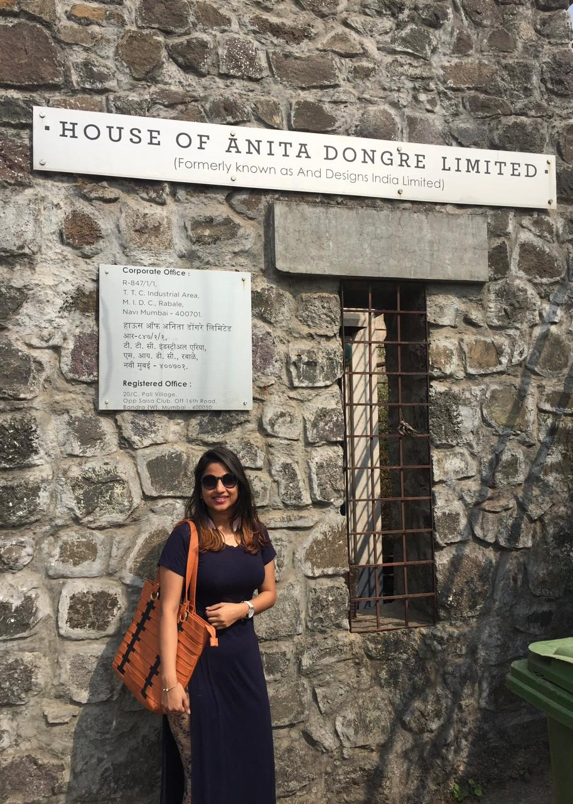

Making sustainability the new language of Indian luxury fashion.
Anita Dongre had a genuine sustainability story. The challenge was translating it into language that luxury consumers would find aspirational — not responsible.

One of India's most recognised luxury fashion houses with a sustainability practice ahead of its time.
Anita Dongre is a Rs 600 Cr+ fashion label operating across luxury, premium, and occasion-wear segments. The brand has deep roots in artisan craft, natural dyes, and ethical production — practices embedded long before sustainability became a fashion industry talking point.
The brief was to build a messaging framework that would make the sustainability narrative land as a luxury signal, not a charitable one — applied consistently across digital, retail, and editorial channels.
Sustainability in fashion has a tone problem.
Most sustainability messaging in fashion reads like an apology: carbon offsets, certifications, supply chain disclaimers. It is the language of responsibility, not desire. Luxury consumers do not make purchase decisions on responsibility. They make them on beauty, provenance, and identity.
Anita Dongre's sustainability practices — the artisan communities, the natural dyes, the slow production cycles — were genuinely beautiful stories. They were being communicated in the wrong register, to the wrong instinct in the consumer.
"Slow fashion is not a compromise. It is the original luxury. Anita Dongre has always made it this way."
The brand line that anchored the messaging framework
Reframe sustainability as provenance. Lead with craft, not conscience.
The messaging framework repositioned sustainability as the proof of luxury, not a trade-off against it. The pillars were: Craft (the artisan skill behind each piece), Provenance (the specific Indian traditions each collection draws from), and Permanence (pieces made to be worn for decades, not seasons).
Each pillar had a specific language register and visual treatment adapted for the three channels. Digital — particularly Instagram — led with visual craft stories. Retail deployed provenance through in-store storytelling cards and trained SA conversations. Editorial positioned the brand as a luxury authority on conscious craft, not a sustainable fashion brand.
A unified voice across three channels. Sustainability as a luxury signal.
The framework gave the brand team a consistent decision-making tool: for any piece of communication, the question was not "how do we talk about sustainability?" but "which pillar does this moment belong to, and what is the luxury register for that pillar?"
The editorial positioning — Anita Dongre as a slow-fashion authority rather than a sustainable fashion brand — created a distinct category frame that other luxury Indian labels were not occupying. That whitespace was the strategic asset.
The audience's aspiration, not their conscience, is the lever.
Sustainability messaging that leads with impact metrics (tonnes of dye saved, artisans employed) speaks to a consumer's sense of responsibility. Messaging that leads with beauty, rarity, and craft speaks to their aspiration. Luxury consumers respond to aspiration. The data on the craft is the proof point you deploy after you have their attention — not the reason you give them to pay attention.